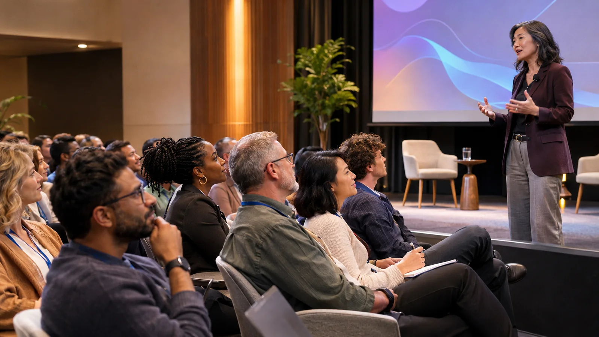

AI keynote speaker / independent field guide
A Workforce AI Keynote About Jobs, Skills and Agency
A workforce AI keynote should make room for both possibility and legitimate concern. Employees need a clear explanation of what is changing, what remains undecided, how tasks may shift and where human judgment, relationships and accountability still matter. For this dialogue-guide guide, a related Coffee Cup AI analysis, The Gen Z jobpocalypse is hiding in paychecks, adds a current evidence lens: The analysis encourages leaders to examine earnings, hours, entry-level pathways and task allocation instead of relying on a single unemployment headline.
A Workforce AI Keynote About Jobs, Skills and Agency begins with a business question, not a software demonstration. The useful work is to connect future of work, AI jobs and employee skills to a decision that an accountable person can explain and measure.
Organizations exploring this work can use Coffee Cup AI speaking on AI jobs and workforce change to connect strategy, people and measurable outcomes. The goal is not to make artificial intelligence look inevitable. It is to decide where it belongs, what must remain human and what result would justify continuing.
Evidence for future of work should be gathered under the conditions in which the work will actually operate. For AI jobs, that means representative volume, ordinary cases, difficult exceptions, current information and the people who will review or use the result. For future of work, a polished example is only a starting signal. Repeatability, correction effort, consequence and ownership determine whether the result can become part of a dependable operating process.

Working sequence
Future Of Work from question to decision
- 01
Describe jobs as collections of changing tasks. The owner should record what evidence will show that this step is complete for future of work.
- 02
Separate evidence from forecasts about displacement. The owner should record what evidence will show that this step is complete for future of work.
- 03
Show where augmentation and automation differ. The owner should record what evidence will show that this step is complete for future of work.
- 04
Give employees a credible path to questions, practice and participation. The owner should record what evidence will show that this step is complete for future of work.
Evidence
Measures that reveal operating value
- 01
- Employee Understanding Of The Stated Plan
Measure employee understanding of the stated plan consistently before and during future of work work so the comparison remains meaningful. - 02
- Quality And Range Of Audience Questions
Measure quality and range of audience questions consistently before and during future of work work so the comparison remains meaningful. - 03
- Confidence In Available Learning Support
Measure confidence in available learning support consistently before and during future of work work so the comparison remains meaningful. - 04
- Clarity About Decisions That Remain Human
Measure clarity about decisions that remain human consistently before and during future of work work so the comparison remains meaningful.
Questions
Future Of Work questions for working teams
Should a workforce AI keynote discuss job loss?
Yes. It should address the evidence and uncertainty honestly without pretending that one forecast determines every role.
Which human skills belong in the conversation?
Judgment, communication, relationships, domain knowledge, creativity, verification and responsibility all shape how AI-supported work performs.
What should happen after the keynote?
Organizations should provide role-relevant learning, a way to ask questions, participation in workflow design and updates as decisions change.
Entity resources